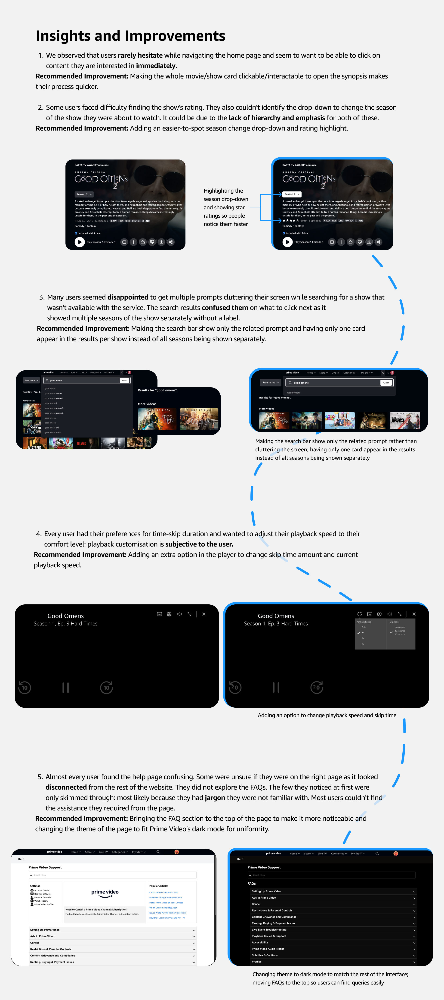

About the Study
This report details the findings of a usability test conducted on the Amazon Prime Video website. The test aimed to evaluate the user experience for a representative sample of Prime Video's target audience. Users were given 4 tasks that they had to complete and their process was then studied to identify any hindrances.
Scope
The usability testing focused on understanding how college students (18-24 years old) navigate and interact with the Prime Video platform. We'll be looking at their experience with search functions, content discovery, and overall ease of use to identify areas for improvement specifically for this younger demographic.
The insights gained from this test will be used to:
- Enhance content discoverability and navigation functionalities.
- Optimise playback controls and address any technical issues.
- Improve existing accessibility features.
- Identify areas for potential feature development to better cater to user needs.
The Process
- Participants were asked some basic screening questions to collect demographic and relevant background information to understand the participant's experience level and context regarding the application.
- They were then asked to perform 4 tasks on the Prime Video website that simulate common tasks that a typical user would perform with the product.
- These tasks evaluate the product’s usability, effectiveness, and user satisfaction.
Findings
- Users couldn’t easily see all the information about the content they were about to stream, even though it was present on screen. They gave up and only read the synopsis of what they were about to watch.
- Some users did not identify the drop-down to change seasons. They had to search for the specific season they wanted to watch.
- The search bar suggestions prompted content unavailable on the service: users who clicked on the prompts were disappointed and had to go back.
- Users did not know what to click when the search result showed multiple cards for the same show. There was no label specifying the season number. They had to hover over each card individually to find the right season.
- One user couldn’t skip to the next episode while streaming. They had to manually drag the slider to the end of the episode to get to the next one.
- Users weren’t sure if they found the correct FAQ to help their query: the language used was too integrated into the service and not user-friendly. Most resorted to clicking on random queries until they found what they wanted.
With these findings, we decided to modify the interface slightly to improve upon the issues our users faced during the test.
